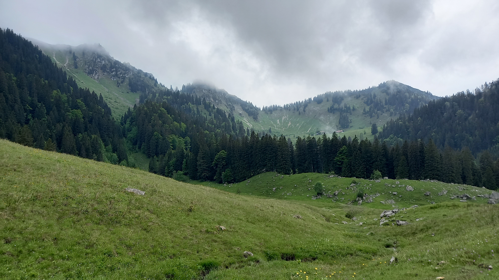

Firstalm to Ruebezahlalm: Kaiserblick-Gravel

Tour auf einen Blick
| Start | Spitzingsattel |
| Ziel | Ellmau (Ruebezahlalm) |
| Distanz | 55 km |
| Hoehenmeter | 1520 hm |
| Dauer | 5:00 Std. |
| Schwierigkeit | Anspruchsvoll (S2) |
| Untergrund | 80% Schotter |
Streckenverlauf
Ueber Valepp und Ursprungpass nach Hinterthiersee, Suedanstieg ueber die Breitenstein-Forstwege zum Sonnenwendjoch, Abfahrt Richtung Ellmau mit Stopp an der Ruebezahlalm (1.036 m). Weiter zum Dorf Ellmau und ueber Going/Scheffau zurueck.
Highlights, Einkehr & Fahrtechnik
Die Ruebezahlalm oberhalb von Ellmau ist der perfekte Einkehr-Klassiker mit Blick auf das 'Kaiser' -Wilder Kaiser-Massiv. Grober Schotter auf der Gipfelrampe, danach flowige Abfahrt. Kaiserschmarrn hier ein Muss.
Grenz-Infos: Maut & Einreise
- Valepp-Mautstrasse: gebuehrenpflichtig, tagesaktuell pruefen
- Grenzuebergang Ursprungpass: fuer Radfahrer frei, Ausweis mitfuehren
- Oesterreichische Forstwege: teils fuer Rad gesperrt - Beschilderung vor Ort beachten
- Reifenbreite ab 45 mm, grober Alpinschotter auf den Joch-Anstiegen
Ausrüstung & Planung
Fuer diese Grenzgaenger-Tour empfiehlt sich ein Gravelbike mit griffigen Reifen, ausreichend Wasser (mind. 2 Liter) und ein Notfall-Reparaturset. Wetter und Wegezustand unbedingt vor der Abfahrt pruefen.
🎒 Empfohlene Profi-Ausrüstung
Anzeige / AffiliateGetestetes Equipment für maximale Sicherheit und Komfort in den Bayerischen Voralpen.
Quellen & Hinweise
Routendaten aus redaktioneller Recherche (Stand 2026). Hoehenmeter, Untergrund und Fahrzeiten sind Richtwerte. Alpine Forstwege koennen ganzjaehrig gesperrt sein. Alle Angaben ohne Gewaehr - bitte tagesaktuell pruefen.
Ergonomischer Rucksack für lange Tagestouren und Alpin-Abenteuer.
Bei Amazon ansehen →🌟 Offizielle Partner: Amazon, Lucky Bike, Urwahn & Digistore24
🛒 Empfohlene Ausrüstung für deine Tour (Amazon Partner)
Perfekt ausgerüstet in den Bayerischen Voralpen – bewährte Wanderschuhe, Rucksäcke & Stöcke:
Entdecke passende Angebote & Ausruestung
Handverlesene Empfehlungen fuer dein naechstes Alpen-Abenteuer – ueber unsere Partner, fuer dich ohne Mehrkosten.